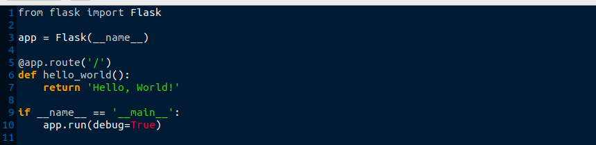
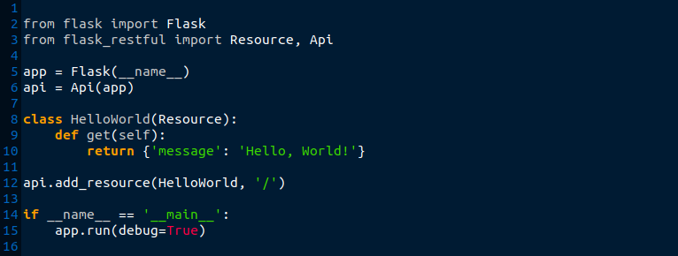
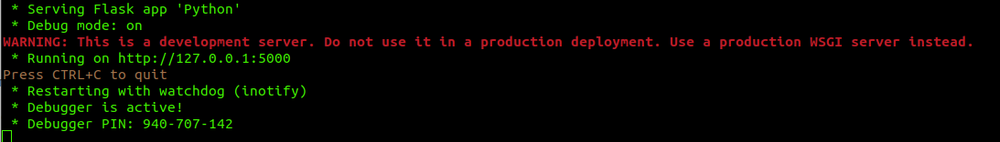
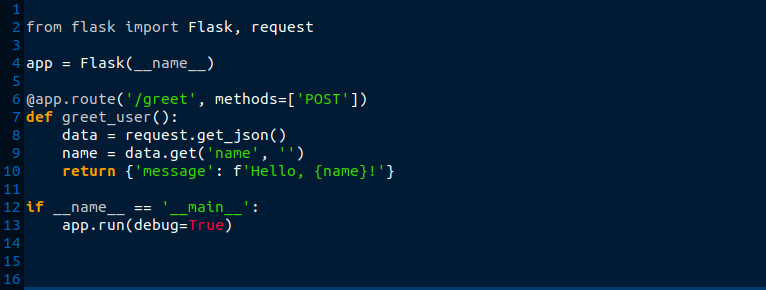
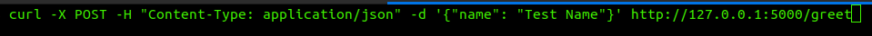
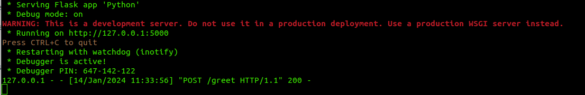
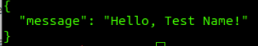

Power of APIs: Flask
In the ever-evolving landscape of Ai development, the importance of APIs (Application Programming Interfaces) cannot be overstated. APIs serve as the bridge that allows different software applications to communicate with each other, enabling seamless data exchange and integration. Flask is a micro web framework for Python used as a tool for building APIs.
Understanding Flask's Philosophy
Flask's philosophy revolves around simplicity and flexibility. It doesn't impose a rigid structure on developers, allowing them to choose the components they need. This minimalist approach makes Flask an ideal choice for building APIs, where customization and control are often needed.
Getting Started with Flask
Setting up a Flask project is a few lines of code where you can have a basic web application up and running. Flask's lightweight nature makes it an excellent choice for projects where performance and efficiency are key concerns.

In above example, a simple "Hello, World!" application has been created. However, Flask's real power lies in its ability to handle more complex scenarios, such as building APIs.
Creating APIs with Flask
Flask makes API development straightforward by providing tools and extensions specifically designed for this purpose. One such extension is Flask-RESTful, which simplifies the process of building RESTful APIs.

Above example, presents a basic API endpoint using Flask-RESTful. The HelloWorld class defines the behavior when a GET request is made to the endpoint. Flask-RESTful takes care of the underlying complexities, allowing developers to focus on defining the API's logic.
#Code executed in terminal.
Basic HTTP methods
HTTP methods, also known as HTTP verbs, play a pivotal role in API (Application Programming Interface) development, defining the actions that can be performed on resources. The primary HTTP methods used in API interactions are:
1. GET:
Retrieves data from the specified resource. It doesn't modify the resource, and multiple identical requests produce the same result as a single request.
2. POST:
Submits data to be processed to a specified resource. It's often used for creating new resources, and the data submitted is typically included in the body of the request.
3. PUT:
Updates a resource or creates it if it doesn't exist at the specified URL. The entire resource is replaced with the data provided in the request, making it "idempotent" (overwrites same resource).
4. PATCH:
Partially updates a resource, applying modifications to it. It's more bandwidth-friendly than PUT, as it only sends the changes instead of the entire resource. It is also idempotent.
5. DELETE:
Removes a resource identified by the given URL. It is an idempotent operation, meaning that making multiple identical requests has the same effect as a single request.
Handling Requests and Responses
Flask simplifies the handling of HTTP requests and responses. By using decorators, developers can specify the methods that should be executed for different HTTP verbs (POST method added to endpoint "/greet")

In this example endpoint (accepts POST method) expects a JSON payload containing a 'name' parameter. The server will respond with a personalized greeting. Flask's request object simplifies the extraction of data from incoming requests (process below):

#Curl request -POST method- with payload "Test Name" will be sent to runnig API endpoint

#API accepts request code:200 and gives option for endpoint to handle request of greeting "Test Name!"

#Endpoint replies with "Hello, Test Name" to request sender, which ends the process as API itself is stateless.